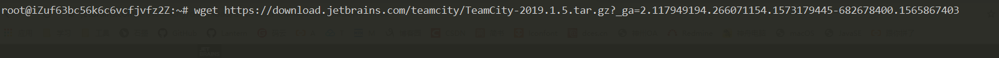

原文连接:https://www.cnblogs.com/L-Wirepuller/p/11835353.html
目录
TeamCity安装和配置
前言
持续集成(CI)
TeamCity是JetBrains旗下的一款持续集成[Continuous Integration，简称CI]工具，开箱即用。学习TeamCity之前首先需要明确一个概念，什么是持续集成(CI)？
持续集成(CI)是一种软件开发实践，即团队开发成员经常集成他们的工作，通常每个成员每天至少集成一次，也就意味着每天可能会发生多次集成。每次集成都通过自动化的构建（包括编译，发布，自动化测试）来验证，从而尽早地发现集成错误。———《百度百科》
TeamCity
业界的CI工具已经有很多了，比如开源工具Jenkins，以及CircleCI、GitLab CI等，本文不讨论各CI工具的优劣，旨在介绍TeamCity的使用方式。
TeamCity是一款功能强大的持续集成（Continue Integration）工具，包括服务器端和客户端，目前支持Java，.Net项目开发。TeamCity提供一系列特性可以让团队快速实现持续继承：IDE工具集成、各种消息通知、各种报表、项目的管理、分布式的编译等等，所有的这些，都是 让你的团队快速享有持续继承带来的效率提升、高质量的软件保障。
环境
- JDK 1.8
- Maven 3.6
- TeamCity 2019.1.5
- SpringBoot 2.1.4.RELEASE
- Ubuntu 16.04
- GitHub
注意:此环境为本文使用环境，各位同学可根据自己公司生产环境酌情配置。
安装
1.Ubuntu系统下使用wget命令下载或者下载到本地之后，再拷贝到服务器上。

2.下载完成后通过tar -xvf fileName 命令，将文件解压。

3.将解压后的文件夹移动至/usr/local/并重名为：TeamCity(个人习惯，以方便服务器上软件管理，此步骤可省略)，并cd到解压后TeamCity目录下的bin文件夹下，效果如下：
4.在此目录下执行./runAll.sh start 以启动TeamCity。查看进程检查是否启动成功。如下图，TeamCity启动成功，默认端口为8111
5.常用配置
如果你要改变端口，找到下面这个 8111 位置：
vim /usr/local/TeamCity/conf/server.xml<Connector port="8111" ...启动程序：
/usr/local/TeamCity/bin/runAll.sh start停止程序：
/usr/local/TeamCity/bin/runAll.sh stop
配置TeamCity
1.通过浏览器访问服务器IP:TeamCity端口，即可访问到如下页面。假设你已经可以访问到这个页面，首先配置TeamCity软件缓存目录，默认为/root/.BuildServer(初次使用不建议修改)，点击Proceed
2.TeamCity将构建历史记录，用户，构建结果和一些运行时数据存储在SQL数据库中。官网建议在首次使用的时候选择默认的：Internal(HSQLDB),但是，在生产环境中强烈建议将外部数据库用作后端TeamCity数据库。在本文中我们选择默认的：Internal(HSQLDB)，然后进入漫长的等待。
3.等待构建初始化
4.创建一个超级管理员用户(此步骤忘记截图，此图片来源网络)
5.本文跳过了完善基础信息步骤，如有需要，可自行百度
项目构建
项目可参考TeamCity测试项目
我们以此项目为例，将其通过TeamCity管理，实现自动构建并发布到本服务器上。
1.点击选择Project --> Create Project
2.选择：Create project from URL，输入项目地址和GitHub账户密码
TeamCity 支持 HTTP(S)、SVN、Git 等链接方式。
3.账号、密码验证通过之后，生成该项目的基础信息。
项目名中有
-生成项目名时不会带出，需要手动添加。
4.TeamCity自动扫描到此项目是用Maven构建而成，所以把POM文件找了出来，如果你一个项目有多种构建方式，有对应的配置文件的话，这里都会显示出来的。此处我们勾选Maven前面的复选框，点击：Use Selected
5.由于我们的目的是构建完后将项目自动发布到该服务器，所以我们的 Maven Goals 应该是：clean install，这里我们应该点击：Edit，进行编辑
6.如下
Goals:
maven installMaven 打包命令Additional Maven command line parameters:
-Dmaven.test.skip=true跳过单元测试Working directory:
/repomaven下载jar包存放位置Maven:
<Custom>选择本地安装的Maven
/usr/local/maven本地maven安装目录位置JDK:
<Custom>选择本地安装的JDKJDK home path: /usr/local/jdk8` 本地JDK安装目录位置
7.通过以上配置，已经完成通过TeamCity自动将项目获取并编译打包。点击Add build step,添加命令实现将项目自动运行。
8.选择Command Line；Step name可以不填，为此步骤的名称；Custom Script，通过端口号将当前运行的项目停止；启动项目
// 通过端口号将当前运行的项目停止，将此处8004换成自己的项目端口 kill -9 $(netstat -nlp | grep :8004 | awk '{print $7}' | awk -F"/" '{ print $1 }') // 启动项目，将此处目录换成自己实际jar包存放目录 nohup java -jar /repo/com/wayne/wayne-teamcity/0.0.1-SNAPSHOT/wayne-teamcity-0.0.1-SNAPSHOT.jar &
9.如下图，点击Run开始手动构建并运行我们的项目
10.点击Build Log查看构建日志
效果展示
好像看不到什么效果 o(╯□╰)o
通过以上配置，即实现了TeamCity(半)自动获取最新代码、构建、发版项目
TeamCity自动构建项目及集成IDEA(待更新......)
结束语
本人已开通公众号，欢迎大家前来灌水